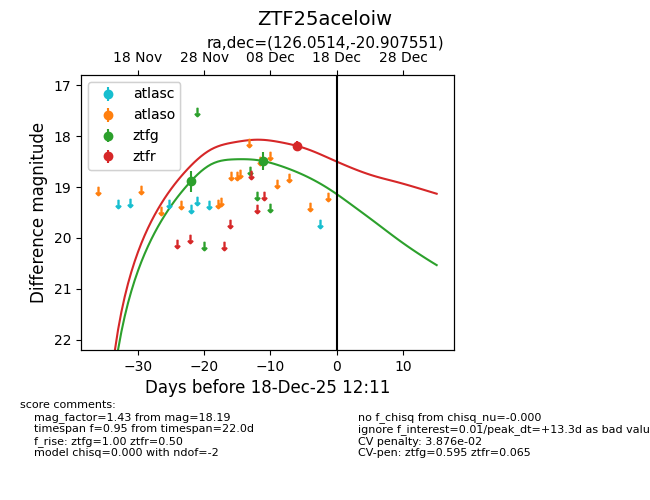
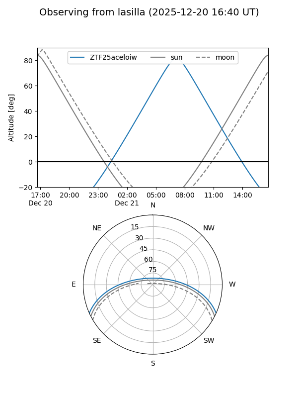
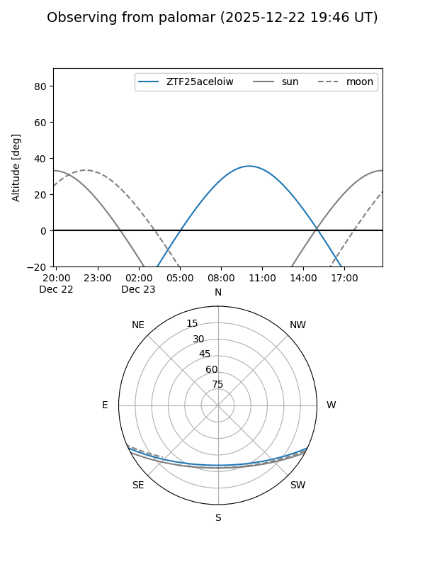

ZTF25aceloiw
Target ZTF25aceloiw at 2025-12-18 12:12
Aliases and brokers:
FINK: fink-portal.org/ZTF25aceloiw
Lasair: lasair-ztf.lsst.ac.uk/objects/ZTF25aceloiw
ALeRCE: alerce.online/object/ZTF25aceloiw
alt names
ZTF25aceloiw (ztf,fink_ztf)
Coordinates:
equatorial (ra, dec) = 126.0514,-20.90755
equatorial (HMS+DMS) = 08:24:12.35,-20:54:27.18
galactic (l, b) = (242.4086,+9.47916)
Photometry
last ztfg=18.49, ztfr=18.19
2 ztfg, 1 ztfr detections
Lightcurve

Visibility


Additional plots